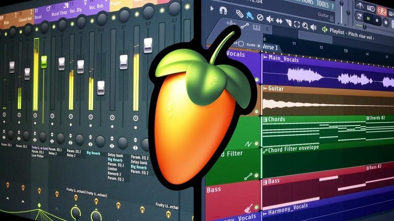

FL Studio 21:

Главным нововведением обновления стала возможность интеграции огибающих в аудиоклипы. Благодаря этому пользователи могут управлять уровнями, фейдами и другими параметрами каждого клипа в отдельности.
В программе появились новые темы оформления с возможностью детальной настройки. Отмечается, что FL Studio 21 получил обновлённый браузер файлов с поддержкой тегов, улучшенным поиском и функцией предварительного просмотра сэмплов. Пользователи версии All Plugins получат новые обработки. В частности, DAW пополнилась ревербератором Luxeverb и фейзером Vintage Phaser. Последний предлагает набор из нескольких классических эффектов, использовавшихся Жаном-Мишелем Жарром при записи альбома «Oxygene».
Download FL Studio 21